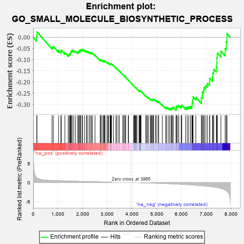
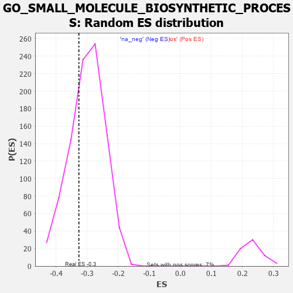

| | | Dataset | 7d |
| Phenotype | NoPhenotypeAvailable |
| Upregulated in class | na_neg |
| GeneSet | GO_SMALL_MOLECULE_BIOSYNTHETIC_PROCESS |
| Enrichment Score (ES) | -0.32698414 |
| Normalized Enrichment Score (NES) | -1.0869741 |
| Nominal p-value | 0.29978585 |
| FDR q-value | 0.7638094 |
| FWER p-Value | 1.0 |
Table: GSEA Results Summary

Fig 1: Enrichment plot: GO_SMALL_MOLECULE_BIOSYNTHETIC_PROCESS
Profile of the Running ES Score & Positions of GeneSet Members on the Rank Ordered List
| PROBE | GENE SYMBOL | GENE_TITLE | RANK IN GENE LIST | RANK METRIC SCORE | RUNNING ES | CORE ENRICHMENT | | 1 | TKT | | | 143 | 1.309 | 0.0045 | No |
| 2 | MTRR | | | 154 | 1.217 | 0.0243 | No |
| 3 | UGDH | | | 764 | 0.540 | -0.0441 | No |
| 4 | UCK2 | | | 812 | 0.529 | -0.0409 | No |
| 5 | G6PC3 | | | 1026 | 0.478 | -0.0598 | No |
| 6 | G6PC | | | 1121 | 0.459 | -0.0638 | No |
| 7 | SDSL | | | 1137 | 0.456 | -0.0578 | No |
| 8 | COQ8B | | | 1282 | 0.434 | -0.0686 | No |
| 9 | P2RY1 | | | 1416 | 0.407 | -0.0785 | No |
| 10 | COQ5 | | | 1458 | 0.398 | -0.0769 | No |
| 11 | GPT | | | 1488 | 0.392 | -0.0738 | No |
| 12 | IDI1 | | | 1513 | 0.389 | -0.0701 | No |
| 13 | LIAS | | | 1524 | 0.387 | -0.0646 | No |
| 14 | NFYB | | | 1543 | 0.384 | -0.0603 | No |
| 15 | NFYC | | | 1582 | 0.377 | -0.0586 | No |
| 16 | DDB1 | | | 1642 | 0.366 | -0.0597 | No |
| 17 | PLOD3 | | | 1715 | 0.353 | -0.0628 | No |
| 18 | COQ2 | | | 1801 | 0.337 | -0.0678 | No |
| 19 | MECR | | | 1838 | 0.330 | -0.0667 | No |
| 20 | DHDDS | | | 1850 | 0.328 | -0.0624 | No |
| 21 | PC | | | 1891 | 0.321 | -0.0619 | No |
| 22 | OXSM | | | 1894 | 0.321 | -0.0566 | No |
| 23 | HACD3 | | | 1932 | 0.315 | -0.0558 | No |
| 24 | GPX4 | | | 1989 | 0.306 | -0.0577 | No |
| 25 | PRPS1 | | | 1997 | 0.305 | -0.0533 | No |
| 26 | KDM3A | | | 2078 | 0.294 | -0.0584 | No |
| 27 | TECR | | | 2156 | 0.284 | -0.0633 | No |
| 28 | SYK | | | 2186 | 0.278 | -0.0621 | No |
| 29 | GNMT | | | 2261 | 0.266 | -0.0670 | No |
| 30 | REST | | | 2308 | 0.259 | -0.0684 | No |
| 31 | MIF | | | 2357 | 0.252 | -0.0701 | No |
| 32 | LBR | | | 2395 | 0.246 | -0.0706 | No |
| 33 | KAT2B | | | 2502 | 0.226 | -0.0802 | No |
| 34 | UCKL1 | | | 2711 | 0.197 | -0.1033 | No |
| 35 | HAS1 | | | 2722 | 0.195 | -0.1012 | No |
| 36 | AGK | | | 2752 | 0.191 | -0.1016 | No |
| 37 | PCK2 | | | 2823 | 0.180 | -0.1074 | No |
| 38 | ARV1 | | | 2827 | 0.179 | -0.1047 | No |
| 39 | WDTC1 | | | 2865 | 0.172 | -0.1064 | No |
| 40 | WDR5 | | | 2892 | 0.168 | -0.1068 | No |
| 41 | PPTC7 | | | 2906 | 0.164 | -0.1056 | No |
| 42 | DUT | | | 2985 | 0.152 | -0.1129 | No |
| 43 | WNT4 | | | 3023 | 0.146 | -0.1151 | No |
| 44 | MAEA | | | 3048 | 0.143 | -0.1157 | No |
| 45 | GPX1 | | | 3109 | 0.135 | -0.1210 | No |
| 46 | COQ3 | | | 3132 | 0.133 | -0.1215 | No |
| 47 | OGG1 | | | 3135 | 0.132 | -0.1195 | No |
| 48 | ACLY | | | 3149 | 0.130 | -0.1189 | No |
| 49 | GCH1 | | | 3166 | 0.127 | -0.1187 | No |
| 50 | FADS1 | | | 3242 | 0.114 | -0.1263 | No |
| 51 | ILVBL | | | 3352 | 0.097 | -0.1386 | No |
| 52 | PDE9A | | | 3360 | 0.095 | -0.1378 | No |
| 53 | SARM1 | | | 3432 | 0.086 | -0.1454 | No |
| 54 | ITPA | | | 3487 | 0.079 | -0.1509 | No |
| 55 | UPP2 | | | 3624 | 0.056 | -0.1673 | No |
| 56 | COQ4 | | | 3670 | 0.048 | -0.1722 | No |
| 57 | ABCD1 | | | 3677 | 0.047 | -0.1721 | No |
| 58 | CNBP | | | 3728 | 0.037 | -0.1779 | No |
| 59 | HACD2 | | | 3744 | 0.035 | -0.1792 | No |
| 60 | IPMK | | | 3846 | 0.021 | -0.1917 | No |
| 61 | DGKQ | | | 3856 | 0.020 | -0.1925 | No |
| 62 | PDXK | | | 4054 | -0.016 | -0.2174 | No |
| 63 | PDE4B | | | 4089 | -0.022 | -0.2214 | No |
| 64 | PDE8A | | | 4097 | -0.023 | -0.2218 | No |
| 65 | IMPA1 | | | 4112 | -0.024 | -0.2232 | No |
| 66 | NFYA | | | 4140 | -0.031 | -0.2261 | No |
| 67 | HMGCL | | | 4141 | -0.031 | -0.2256 | No |
| 68 | GFI1 | | | 4168 | -0.037 | -0.2283 | No |
| 69 | GGT7 | | | 4200 | -0.041 | -0.2315 | No |
| 70 | MCAT | | | 4285 | -0.058 | -0.2412 | No |
| 71 | TDG | | | 4290 | -0.058 | -0.2407 | No |
| 72 | RAN | | | 4299 | -0.059 | -0.2407 | No |
| 73 | IPPK | | | 4306 | -0.060 | -0.2404 | No |
| 74 | NUDT9 | | | 4333 | -0.066 | -0.2426 | No |
| 75 | MTHFS | | | 4337 | -0.066 | -0.2418 | No |
| 76 | AMACR | | | 4338 | -0.066 | -0.2407 | No |
| 77 | PDE7A | | | 4355 | -0.069 | -0.2415 | No |
| 78 | ACADL | | | 4360 | -0.069 | -0.2408 | No |
| 79 | AASS | | | 4552 | -0.106 | -0.2634 | No |
| 80 | CBR1 | | | 4589 | -0.116 | -0.2660 | No |
| 81 | CLK2 | | | 4628 | -0.124 | -0.2687 | No |
| 82 | MTAP | | | 4675 | -0.133 | -0.2722 | No |
| 83 | DEGS1 | | | 4747 | -0.148 | -0.2787 | No |
| 84 | PDE1A | | | 4773 | -0.152 | -0.2793 | No |
| 85 | MYO5A | | | 4787 | -0.155 | -0.2782 | No |
| 86 | ABCD3 | | | 4829 | -0.164 | -0.2806 | No |
| 87 | BCAT1 | | | 4857 | -0.168 | -0.2812 | No |
| 88 | GATM | | | 4858 | -0.168 | -0.2782 | No |
| 89 | CBS | | | 4867 | -0.170 | -0.2763 | No |
| 90 | EP300 | | | 4941 | -0.186 | -0.2824 | No |
| 91 | COQ6 | | | 4979 | -0.193 | -0.2838 | No |
| 92 | NUDT3 | | | 5050 | -0.209 | -0.2891 | No |
| 93 | PDE4C | | | 5076 | -0.219 | -0.2885 | No |
| 94 | CLCN2 | | | 5224 | -0.250 | -0.3029 | No |
| 95 | ACOT8 | | | 5364 | -0.288 | -0.3156 | No |
| 96 | ACER3 | | | 5390 | -0.294 | -0.3137 | No |
| 97 | ACOX2 | | | 5461 | -0.310 | -0.3173 | No |
| 98 | VDR | | | 5517 | -0.325 | -0.3187 | No |
| 99 | SPHK1 | | | 5576 | -0.339 | -0.3202 | Yes |
| 100 | PGM1 | | | 5593 | -0.342 | -0.3163 | Yes |
| 101 | G6PD | | | 5638 | -0.358 | -0.3157 | Yes |
| 102 | PNPO | | | 5663 | -0.365 | -0.3124 | Yes |
| 103 | ABCG1 | | | 5778 | -0.399 | -0.3201 | Yes |
| 104 | PMVK | | | 5792 | -0.403 | -0.3147 | Yes |
| 105 | ADA | | | 5798 | -0.405 | -0.3083 | Yes |
| 106 | PLPP6 | | | 5842 | -0.416 | -0.3066 | Yes |
| 107 | CDO1 | | | 5892 | -0.432 | -0.3053 | Yes |
| 108 | SCAP | | | 5986 | -0.466 | -0.3091 | Yes |
| 109 | XBP1 | | | 6011 | -0.475 | -0.3039 | Yes |
| 110 | EGR1 | | | 6165 | -0.527 | -0.3143 | Yes |
| 111 | RGN | | | 6233 | -0.547 | -0.3134 | Yes |
| 112 | OAT | | | 6293 | -0.572 | -0.3110 | Yes |
| 113 | ACMSD | | | 6367 | -0.603 | -0.3098 | Yes |
| 114 | COQ7 | | | 6420 | -0.628 | -0.3056 | Yes |
| 115 | ABCA2 | | | 6433 | -0.634 | -0.2961 | Yes |
| 116 | UMPS | | | 6442 | -0.637 | -0.2861 | Yes |
| 117 | SRR | | | 6464 | -0.646 | -0.2775 | Yes |
| 118 | LIPG | | | 6468 | -0.648 | -0.2667 | Yes |
| 119 | CLN3 | | | 6580 | -0.699 | -0.2687 | Yes |
| 120 | KYNU | | | 6802 | -0.816 | -0.2827 | Yes |
| 121 | ABHD3 | | | 6804 | -0.816 | -0.2687 | Yes |
| 122 | MGLL | | | 6842 | -0.838 | -0.2589 | Yes |
| 123 | PTH1R | | | 6845 | -0.839 | -0.2446 | Yes |
| 124 | MGST3 | | | 6896 | -0.865 | -0.2359 | Yes |
| 125 | CSPG4 | | | 6918 | -0.878 | -0.2234 | Yes |
| 126 | PDE2A | | | 6985 | -0.927 | -0.2157 | Yes |
| 127 | PIBF1 | | | 7049 | -0.966 | -0.2070 | Yes |
| 128 | DPYD | | | 7132 | -1.019 | -0.1997 | Yes |
| 129 | CFTR | | | 7143 | -1.030 | -0.1832 | Yes |
| 130 | GSTM1 | | | 7256 | -1.129 | -0.1778 | Yes |
| 131 | QKI | | | 7272 | -1.145 | -0.1599 | Yes |
| 132 | ASPG | | | 7306 | -1.178 | -0.1436 | Yes |
| 133 | SPR | | | 7407 | -1.273 | -0.1343 | Yes |
| 134 | OTC | | | 7430 | -1.305 | -0.1144 | Yes |
| 135 | KMO | | | 7432 | -1.308 | -0.0919 | Yes |
| 136 | GGT1 | | | 7447 | -1.329 | -0.0706 | Yes |
| 137 | ASNS | | | 7595 | -1.547 | -0.0625 | Yes |
| 138 | PDE4D | | | 7764 | -1.944 | -0.0502 | Yes |
| 139 | ACSS3 | | | 7808 | -2.077 | -0.0196 | Yes |
| 140 | SP1 | | | 7840 | -2.321 | 0.0167 | Yes |
Table: GSEA details [plain text format]

Fig 2: GO_SMALL_MOLECULE_BIOSYNTHETIC_PROCESS: Random ES distribution
Gene set null distribution of ES for GO_SMALL_MOLECULE_BIOSYNTHETIC_PROCESS